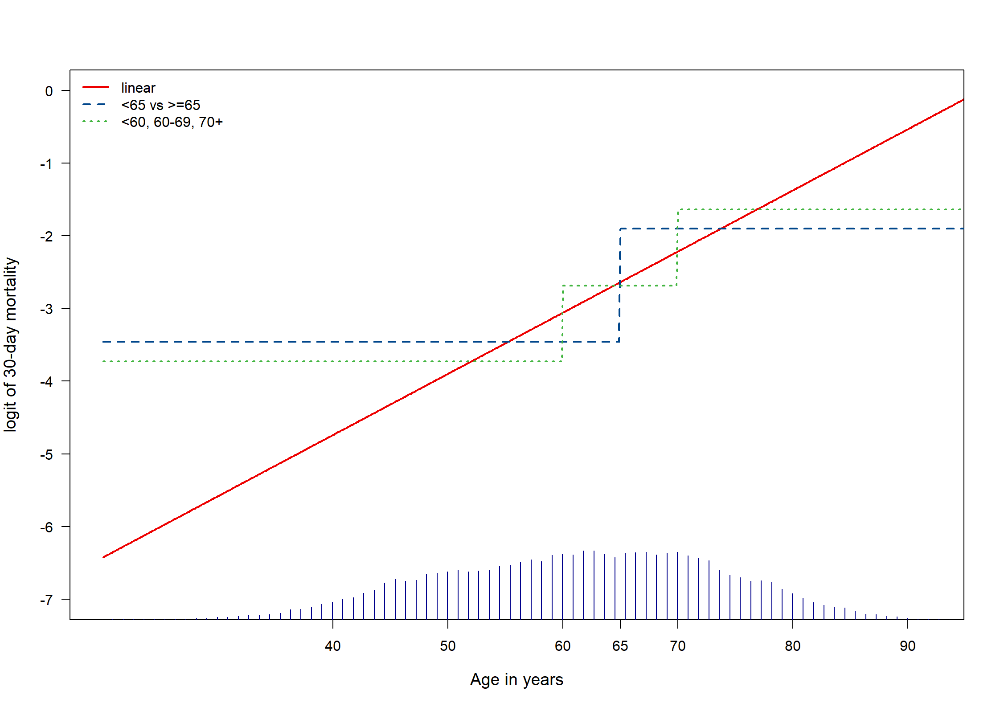
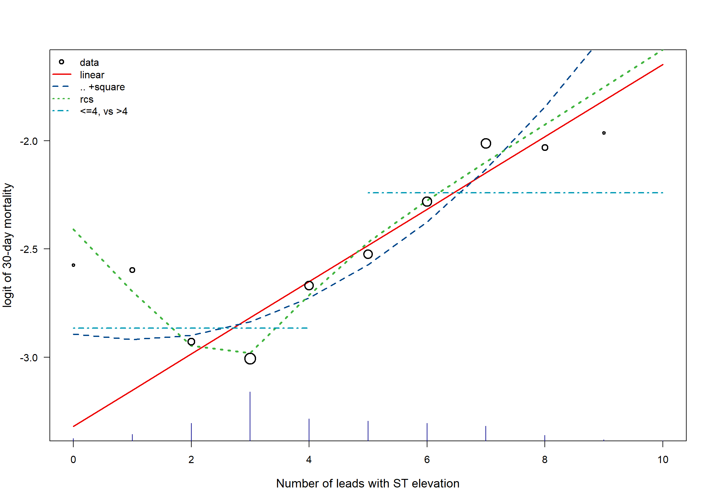
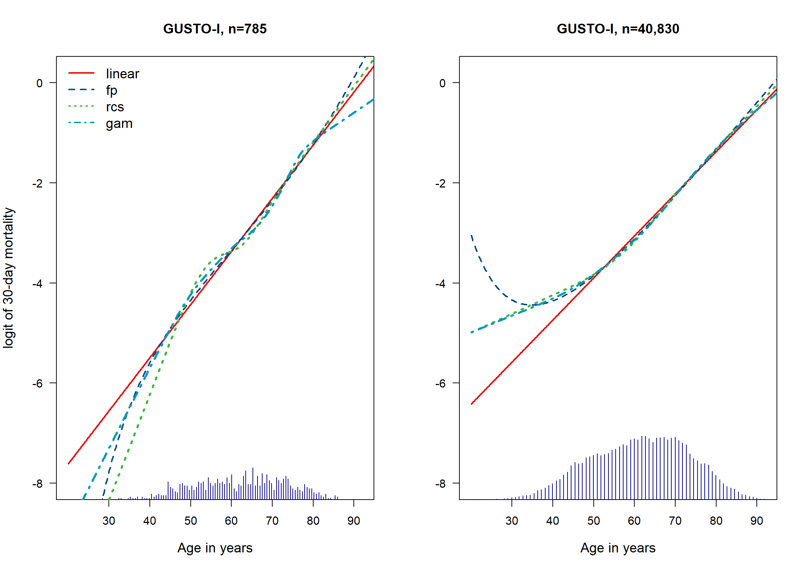
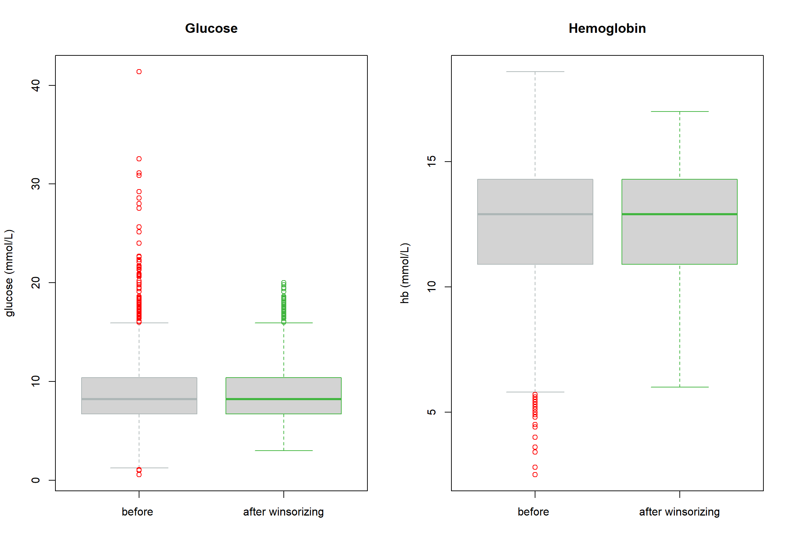
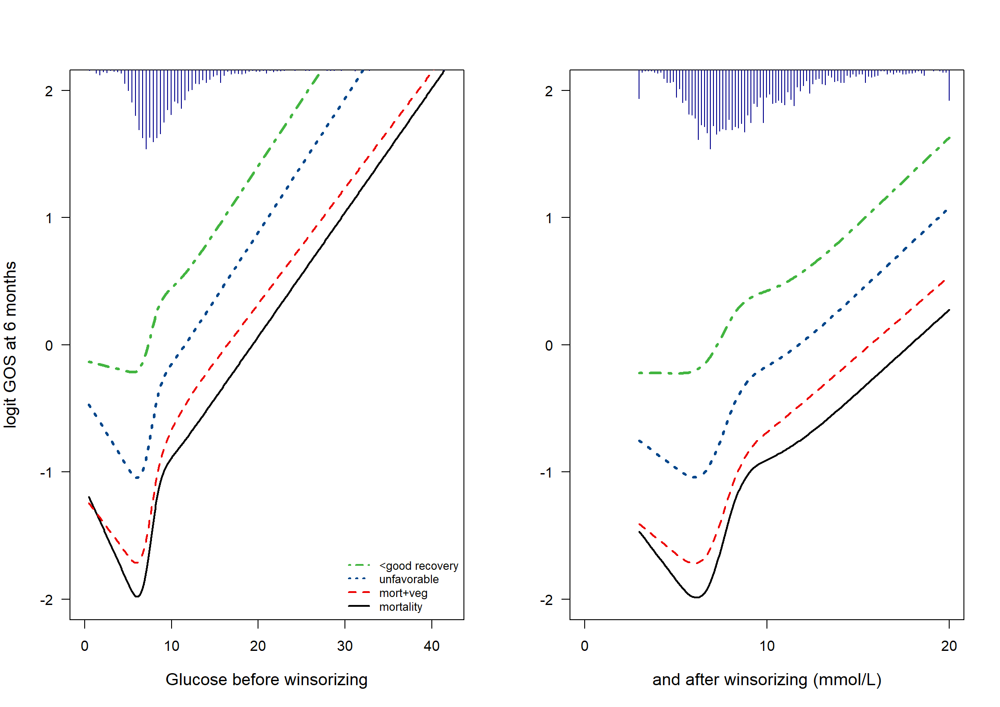
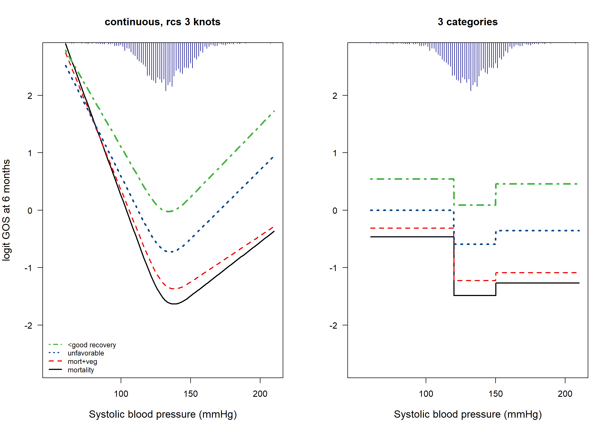

Code show/hide
# Import gusto
gusto <- read.csv("data/gusto_age_STE.csv")[, -1]
# Import sample4; n=785
gustos <- read.csv("data/Gustos4Age.csv")
# Import TBI data; n=2159
TBI <- read.csv("data/TBI2vars.csv")GUSTO-I is a data set with patients suffering from an acute myocardial infarction, where we want to predict 30-day mortality. TBI is a data set with patients suffering from a moderate or severe traumatic brain injury.
# Import gusto
gusto <- read.csv("data/gusto_age_STE.csv")[, -1]
# Import sample4; n=785
gustos <- read.csv("data/Gustos4Age.csv")
# Import TBI data; n=2159
TBI <- read.csv("data/TBI2vars.csv")agegusto.linear <- lrm(DAY30 ~ AGE, data = gusto, x = T, y = T)
agegusto.square <- lrm(DAY30 ~ pol(AGE, 2), data = gusto, x = T, y = T)
agegusto.rcs <- lrm(DAY30 ~ rcs(AGE, 5), data = gusto, x = T, y = T)
## dichotomize
agegusto.cat65 <- lrm(DAY30 ~ ifelse(AGE < 65, 0, 1), data = gusto, x = T, y = T)
## 3 categories
agegusto.3cat <- lrm(DAY30 ~ ifelse(AGE < 60, 0, ifelse(AGE < 70, 1, 2)), data = gusto, x = T, y = T)
# Predict for age 20:95
newdata.age <- data.frame("AGE" = seq(20, 95, by = 0.1))
pred.agegusto.linear <- predict(agegusto.linear, newdata.age)
pred.agegusto.square <- predict(agegusto.square, newdata.age)
pred.agegusto.rcs <- predict(agegusto.rcs, newdata.age)
pred.agegusto.cat65 <- predict(agegusto.cat65, newdata.age)
pred.agegusto.3cat <- predict(agegusto.3cat, newdata.age)
# Make plot
dd <- datadist(gusto)
options(datadist = "dd") # for rms
par(mfrow = c(1, 1))
plot(
x = newdata.age[, 1], y = pred.agegusto.linear, xlim = c(20, 92), ylim = c(-7, 0), las = 1, xaxt = "n",
xlab = "Age in years", ylab = "logit of 30-day mortality", cex.lab = 1.2, type = "l", lwd = 2, col = mycolors[2]
)
axis(1, at = c(40, 50, 60, 65, 70, 80, 90))
lines(x = newdata.age[, 1], y = pred.agegusto.cat65, lty = 2, lwd = 2, col = mycolors[3])
lines(x = newdata.age[, 1], y = pred.agegusto.3cat, lty = 3, lwd = 2, col = mycolors[4])
scat1d(x = gusto$AGE, side = 1, frac = .05, col = "darkblue")
legend("topleft",
legend = c("linear", "<65 vs >=65", "<60, 60-69, 70+"),
lty = c(1, 2, 3), lwd = 2, cex = 1, bty = "n", col = mycolors[2:4]
)
# winsorize at STE 10
gusto$STE <- ifelse(gusto$STE > 10, 10, gusto$STE)
gusto$STE.f <- as.factor(gusto$STE)
STE.linear <- lrm(DAY30 ~ STE, data = gusto, x = T, y = T)
STE.square <- lrm(DAY30 ~ pol(STE, 2), data = gusto, x = T, y = T)
STE.rcs <- lrm(DAY30 ~ rcs(STE, 5), data = gusto, x = T, y = T)
STE.factor <- lrm(DAY30 ~ STE.f, data = gusto, x = T, y = T)
# dichotomize
STE.cat4 <- lrm(DAY30 ~ ifelse(STE < 5, 0, 1), data = gusto, x = T, y = T)
# predict for STE 0:10
newdata.STE <- data.frame("STE" = seq(0, 10, by = 1))
pred.STE.linear <- predict(STE.linear, newdata.STE)
pred.STE.square <- predict(STE.square, newdata.STE)
pred.STE.rcs <- predict(STE.rcs, newdata.STE)
pred.STE.cat4 <- predict(STE.cat4, newdata.STE)
par(mfrow = c(1, 1))
plot(
x = newdata.STE[, 1], y = pred.STE.linear, las = 1,
xlab = "Number of leads with ST elevation", ylab = "logit of 30-day mortality", cex.lab = 1.2, type = "l", lwd = 2, col = mycolors[2]
)
lines(x = newdata.STE[, 1], y = pred.STE.square, lty = 2, lwd = 2, col = mycolors[3])
lines(x = newdata.STE[, 1], y = pred.STE.rcs, lty = 3, lwd = 3, col = mycolors[4])
lines(x = newdata.STE[1:5, 1], y = pred.STE.cat4[1:5], lty = 4, lwd = 2, col = mycolors[5])
lines(x = newdata.STE[6:11, 1], y = pred.STE.cat4[6:11], lty = 4, lwd = 2, col = mycolors[5])
# Original data points, with size proportional to sqrt(events)
STEmort <- log(by(gusto$DAY, gusto$STE, mean) / (1 - by(gusto$DAY, gusto$STE, mean)))[1:11]
STEw <- sqrt(by(gusto$DAY, gusto$STE, sum)[1:11]) / 10
points(x = newdata.STE[, 1], y = STEmort, pch = 1, lwd = 2, cex = STEw, col = "black")
scat1d(x = gusto$STE, side = 1, frac = .05, col = "darkblue")
legend("topleft",
legend = c("data", "linear", ".. +square", "rcs", "<=4, vs >4"),
lty = c(NA, 1, 2, 3, 4), pch = c(1, NA, NA, NA, NA), lwd = 2, cex = 1, bty = "n", col = mycolors[1:5]
)
# Examine non-linearities in gustos sample
# Age
age.linear <- lrm(DAY30 ~ AGE, data = gustos, x = T, y = T, linear.predictors = F)
age.rcs1 <- lrm(DAY30 ~ rcs(AGE, 5), data = gustos, x = T, y = T, linear.predictors = F)
age.fp1 <- mfp(DAY30 ~ fp(AGE, df = 4), alpha = 1, data = gustos, family = binomial) # selected: -2 and 3
age.gam1 <- gam(DAY30 ~ s(AGE), data = gustos, family = binomial)
# examine predictions for age 20:95
age.mat <- matrix(nrow = 751, ncol = 5)
names(age.mat) <- list(NULL, Cs(AGE, linear, fp, rcs, gam))
AGE <- seq(20, 95, by = 0.1)
age.mat[, 1] <- AGE
age.mat[, 2] <- predict(age.linear, newdata = as.data.frame(x = AGE), type = "lp")
age.mat[, 3] <- predict(age.fp1, newdata = as.data.frame(x = AGE))
age.mat[, 4] <- predict(age.rcs1, newdata = as.data.frame(x = AGE), type = "lp")
age.mat[, 5] <- predict(age.gam1, newdata = as.data.frame(x = AGE))
# Plot for n=785, Fig 9.3, part A #
par(mfrow = c(1, 2))
plot(
x = age.mat[, 1], y = age.mat[, 2], xlim = c(20, 92), ylim = c(-8, 0.2), las = 1, xaxt = "n",
xlab = "Age in years", ylab = "logit of 30-day mortality", cex.lab = 1.2, type = "l", lwd = 2, col = mycolors[2]
)
axis(1, at = c(30, 40, 50, 60, 70, 80, 90))
lines(x = age.mat[, 1], y = age.mat[, 3], lty = 2, lwd = 2, col = mycolors[3])
lines(x = age.mat[, 1], y = age.mat[, 4], lty = 3, lwd = 3, col = mycolors[4])
lines(x = age.mat[, 1], y = age.mat[, 5], lty = 4, lwd = 3, col = mycolors[5])
histSpike(x = gustos$AGE, side = 1, frac = .1, col = "darkblue", add = T)
legend("topleft",
legend = c("linear", "fp", "rcs", "gam"),
lty = 1:4, lwd = 2, cex = 1.2, bty = "n", col = mycolors[2:5]
)
title("GUSTO-I, n=785")
# End plot n=785
####################
## Now: N=40,830 ##
age.linear.2 <- lrm(DAY30 ~ AGE, data = gusto, x = T, y = T, linear.predictors = F)
age.rcs1.2 <- lrm(DAY30 ~ rcs(AGE, 5), data = gusto, x = T, y = T, linear.predictors = F)
age.fp1.2 <- mfp(DAY30 ~ fp(AGE, df = 4), alpha = 1, data = gusto, family = binomial) # selected: -2 and 3
age.gam1.2 <- gam(DAY30 ~ s(AGE), data = gusto, family = binomial)
# examine predictions for age 20:95
age.mat.2 <- matrix(nrow = 751, ncol = 5)
names(age.mat.2) <- list(NULL, Cs(AGE, linear, fp, rcs, gam))
age.mat.2[, 1] <- AGE
age.mat.2[, 2] <- predict(age.linear.2, newdata = as.data.frame(x = AGE), type = "lp")
age.mat.2[, 3] <- predict(age.fp1.2, newdata = as.data.frame(x = AGE))
age.mat.2[, 4] <- predict(age.rcs1.2, newdata = as.data.frame(x = AGE), type = "lp")
age.mat.2[, 5] <- predict(age.gam1.2, newdata = as.data.frame(x = AGE))
# Plot for n=40830
plot(
x = age.mat.2[, 1], y = age.mat.2[, 2], xlim = c(20, 92), ylim = c(-8, 0.2), las = 1, xaxt = "n",
xlab = "Age in years", ylab = "", cex.lab = 1.2, type = "l", lwd = 2, col = mycolors[2]
)
axis(1, at = c(30, 40, 50, 60, 70, 80, 90))
lines(x = age.mat.2[, 1], y = age.mat.2[, 3], lty = 2, lwd = 2, col = mycolors[3])
lines(x = age.mat.2[, 1], y = age.mat.2[, 4], lty = 3, lwd = 3, col = mycolors[4])
lines(x = age.mat.2[, 1], y = age.mat.2[, 5], lty = 4, lwd = 3, col = mycolors[5])
histSpike(x = gusto$AGE, side = 1, frac = .2, col = "darkblue", add = T)
title("GUSTO-I, n=40,830")
We evaluate the predictors ‘glucose’ and ‘hemoglobin’ in TBI. Both are first truncated, after inspecting boxplots (Fig 9.4), and then analyzed for their prognostic value, with plots for illustration of the estimated relations (Fig 9.5).
# glucose
quantile(TBI$glucose, probs = c(.005, .01, .02, .98, .99, .995), na.rm = T) 0.5% 1% 2% 98% 99% 99.5%
1.57 2.26 4.28 18.34 20.92 23.39 # 0.5% 1% 2% 98% 99% 99.5%
# 1.57 2.26 4.28 18.34 20.92 23.39
# So, winsorize / truncate at 3 and 20
# use simple function to do the winsorizing:
# {ifelse(x<lower,upper, ifelse(x>upper,upper, x))}
winsorize <- function(x, lower = quantile(x, probs = 0.01), upper = quantile(x, probs = 0.99)) {
ifelse(x < lower, lower,
ifelse(x > upper, upper, x)
)
}
TBI$glucoset <- winsorize(TBI$glucose, 3, 20)
# systolic bp
quantile(TBI$hb, probs = c(.005, .01, .02, .98, .99, .995), na.rm = T) 0.5% 1% 2% 98% 99% 99.5%
4.87 5.40 6.30 16.50 16.80 17.00 # 0.5% 1% 2% 98% 99% 99.5%
# 4.87 5.40 6.30 16.50 16.80 17.00
# So, winsorize / truncate at 6 and 17
TBI$hbt <- winsorize(TBI$hb, 6, 17)
# boxplots for illustration
par(mfrow = c(1, 2))
boxplot(x = cbind(TBI$glucose, TBI$glucoset), outcol = c("red", mycolors[4]), border = mycolors[c(10, 4)], xaxt = "n", ylab = "glucose (mmol/L)")
axis(1, at = c(1, 2), labels = c("before ", "after winsorizing"))
title("Glucose")
boxplot(x = cbind(TBI$hb, TBI$hbt), outcol = c("red", mycolors[4]), border = mycolors[c(10, 4)], xaxt = "n", ylab = "hb (mmol/L)")
axis(1, at = c(1, 2), labels = c("before ", "after winsorizing"))
title("Hemoglobin")

We now examine the prognostic value of systolic blood pressure (BP) in TBI patients. We expect low BP (hypotension) to be especially risky.
quantile(TBI$d.sysbpt, probs = c(.01, .25, .75, .99), na.rm = T) 1% 25% 75% 99%
92.9 121.1 142.1 171.8 TBIs <- TBI[!is.na(TBI$d.sysbpt), ]
# 1% 25% 75% 99%
# 92.9 121.1 142.1 171.8
g1 <- lrm(d.gos < 2 ~ rcs(d.sysbpt, 3), data = TBIs)
g2 <- lrm(d.gos < 3 ~ rcs(d.sysbpt, 3), data = TBIs)
g3 <- lrm(d.gos < 4 ~ rcs(d.sysbpt, 3), data = TBIs)
g4 <- lrm(d.gos < 5 ~ rcs(d.sysbpt, 3), data = TBIs)
# Define categorical variants of systolic BP
TBIs$d.sysbpt.c <- as.factor(ifelse(TBIs$d.sysbpt < 120, 1, ifelse(TBIs$d.sysbpt > 150, 2, 0)))
g1t <- lrm(d.gos < 2 ~ d.sysbpt.c, data = TBIs)
g2t <- lrm(d.gos < 3 ~ d.sysbpt.c, data = TBIs)
g3t <- lrm(d.gos < 4 ~ d.sysbpt.c, data = TBIs)
g4t <- lrm(d.gos < 5 ~ d.sysbpt.c, data = TBIs)
dd <- datadist(TBIs)
options(datadist = "dd")
# Odds ratios
exp(coef(g1t)) # OR 2.78 for low BP and 1.25 for high BP Intercept d.sysbpt.c=1 d.sysbpt.c=2
0.226 2.777 1.245 describe(TBI$d.sysbpt)TBI$d.sysbpt
n missing distinct Info Mean Gmd .05 .10 .25 .50 .75
2159 0 1566 1 131.4 17.61 107.0 112.2 121.1 131.3 142.1
.90 .95
151.1 156.2
lowest : 60 64.19 65.6 71.33 73.71 , highest: 182.92 184.16 184.7 188.29 207.4 describe(TBIs$d.sysbpt.c)TBIs$d.sysbpt.c
n missing distinct
2159 0 3
Value 0 1 2
Frequency 1435 474 250
Proportion 0.665 0.220 0.116# data in matrix for plot
d.sysbpt <- seq(60, 210, by = 1) # 151 elements
g.mat <- matrix(nrow = 151, ncol = 5)
names(g.mat) <- list(NULL, Cs(d.sysbpt, g1, g2, g3, g4))
g.mat[, 1] <- d.sysbpt
g.mat[, 2] <- predict(g1, newdata = as.data.frame(x = d.sysbpt))
g.mat[, 3] <- predict(g2, newdata = as.data.frame(x = d.sysbpt))
g.mat[, 4] <- predict(g3, newdata = as.data.frame(x = d.sysbpt))
g.mat[, 5] <- predict(g4, newdata = as.data.frame(x = d.sysbpt))
# Plot: Fig 9.6, part I
par(mfrow = c(1, 2))
plot(
x = g.mat[, 1], y = g.mat[, 2], xlim = c(50, 210), ylim = c(-2.7, 2.7), las = 1, xaxt = "n",
xlab = "Systolic blood pressure (mmHg)", ylab = "logit GOS at 6 months", cex.lab = 1.2, type = "l", lwd = 2, col = mycolors[1]
)
axis(1, at = c(100, 150, 200))
lines(x = g.mat[, 1], y = g.mat[, 3], lty = 2, lwd = 2, col = mycolors[2])
lines(x = g.mat[, 1], y = g.mat[, 4], lty = 3, lwd = 3, col = mycolors[3])
lines(x = g.mat[, 1], y = g.mat[, 5], lty = 4, lwd = 3, col = mycolors[4])
histSpike(x = TBI$d.sysbpt, side = 3, frac = .2, col = "darkblue", add = T)
legend("bottomleft", legend = c("<good recovery", "unfavorable", "mort+veg", "mortality"), lty = 4:1, lwd = 2, cex = 0.8, bty = "n", col = mycolors[4:1])
title("continuous, rcs 3 knots")
## Plot 9.6, part II
d.sysbpt.c <- c(0, 1, 2)
d.sysbpt <- seq(60, 210, by = .1) # 1501 elements
g.mat2 <- matrix(nrow = 1501, ncol = 5)
g1t.c <- predict(g1t, newdata = as.data.frame(x = d.sysbpt.c))
g2t.c <- predict(g2t, newdata = as.data.frame(x = d.sysbpt.c))
g3t.c <- predict(g3t, newdata = as.data.frame(x = d.sysbpt.c))
g4t.c <- predict(g4t, newdata = as.data.frame(x = d.sysbpt.c))
names(g.mat2) <- list(NULL, Cs(d.sysbpt, g1, g2, g3, g4))
g.mat2[, 1] <- d.sysbpt
g.mat2[, 2] <- ifelse(d.sysbpt < 120, g1t.c[2], ifelse(d.sysbpt > 150, g1t.c[3], g1t.c[1]))
g.mat2[, 3] <- ifelse(d.sysbpt < 120, g2t.c[2], ifelse(d.sysbpt > 150, g2t.c[3], g2t.c[1]))
g.mat2[, 4] <- ifelse(d.sysbpt < 120, g3t.c[2], ifelse(d.sysbpt > 150, g3t.c[3], g3t.c[1]))
g.mat2[, 5] <- ifelse(d.sysbpt < 120, g4t.c[2], ifelse(d.sysbpt > 150, g4t.c[3], g4t.c[1]))
# Plot
plot(
x = g.mat2[, 1], y = g.mat2[, 2], xlim = c(50, 210), ylim = c(-2.7, 2.7), las = 1, xaxt = "n",
xlab = "Systolic blood pressure (mmHg)", ylab = "", cex.lab = 1.2, type = "l", lwd = 2, col = mycolors[1]
)
axis(1, at = c(100, 150, 200))
lines(x = g.mat2[, 1], y = g.mat2[, 3], lty = 2, lwd = 2, col = mycolors[2])
lines(x = g.mat2[, 1], y = g.mat2[, 4], lty = 3, lwd = 3, col = mycolors[3])
lines(x = g.mat2[, 1], y = g.mat2[, 5], lty = 4, lwd = 3, col = mycolors[4])
histSpike(x = TBI$d.sysbpt, side = 3, frac = .2, col = "darkblue", add = T)
title("3 categories")